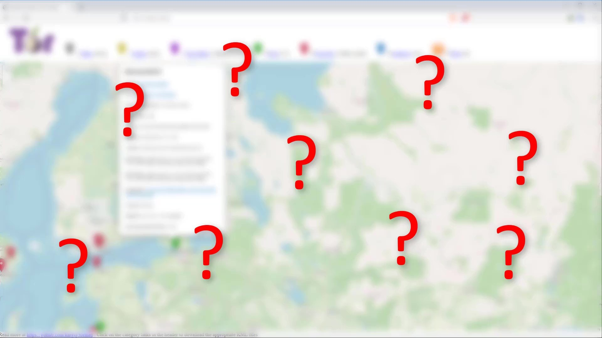
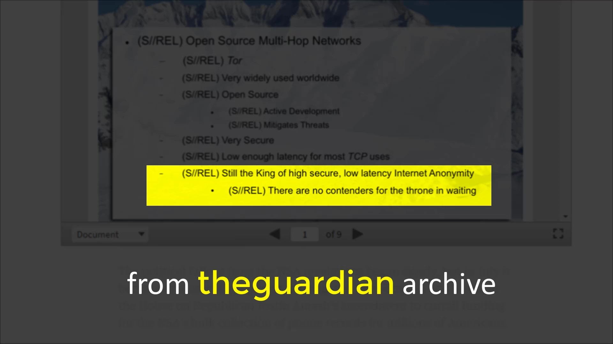

Fundamental Weakness - 3
Another point of risk is that the servers used as nodes and transferring your packages are provided by volunteers around the world. It is not surprising that among these volunteers there are various intelligence agencies and individuals or organizations intending to monitor Tor. In particular, the requirement that the preferred servers have high bandwidth and long active working time are conditions that are not easy for every volunteer to provide for free. Moreover, the possibility of dealing with copyrights and various lawsuits due to the traffic generated through their own servers makes people question the interests of people who endure such a trouble many times.

When this is the case, you don't know which node to trust. However, the probability of this insecurity by the tor community is considered very low. Considering that there are about 6500 nodes on the Tor network and the server selection is made on randomness, and it serves many users at the same time, it is considered low probability to make a point-by-point traffic analysis. However, probably this is a very innocent expectations. Because we do not know the limit and potential of the resources in the hands of an intelligence agency or any formation that has a high motivation to follow you, this danger always seems to be present. There are even some successful attacks on the Tor network itself.
Even so; since any observer is expected to be able to check both entry and exit nodes for tangible evidence, it is highly unlikely that the entry and exit node of three randomly selected servers belong to the same observer. Moreover, since Tor changes the middle and exit nodes every 10 minutes by keeping the entry node constant, it significantly reduces the probability that both the entry and exit node are being managed by the same observer.

In addition, as a result of attacks on the Tor network; it is the general expert opinion that it is more precise to expect target people to make mistakes that will reveal their privacy rather than focusing on the imperfect structure of the Tor network.
In short, it is not easy to achieve anonymity. Tor never guarantees 100% anonymity either. But in retrospect, even well-funded sophisticated attacks on Tor have not yielded definitive useful results.
Documents published by Edward Snowden also report that "NSA", has "major" problems in monitoring the Tor network.

However, Tor can never guarantee 100% anonymity, as we do not know the potential power of today's organizations and the potentially newly developed attack techniques. As proof of this, 0day vulnerabilities found on Tor in the recent past can be cited. 0day vulnerabilities refer to vulnerabilities that have not been noticed or even if noticed, vulnerabilities that have not yet been patched. Although there are many published and closed vulnerabilities, it is thought that there are many vulnerabilities that have not yet been closed and are predicted to be actively used by organizations such as intelligence services. These vulnerabilities are often critical vulnerabilities of the type that will expose your real IP address.However, as far as we know, there are two most common types of methods that compromise the Tor network's privacy rather than technical attacks.
- Malicious exit nodes
- Timing analysis